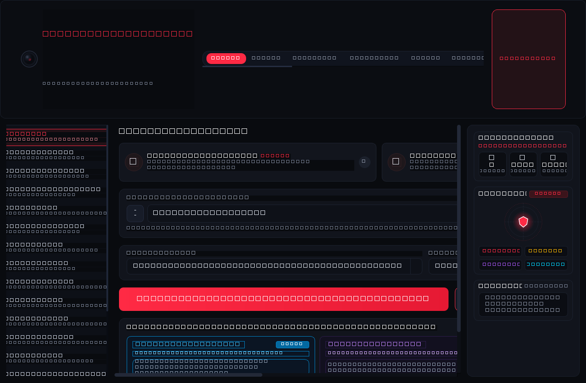

Autonomous AI-Powered Security, QA &
Automated Remediation Workstation
A professional cybersecurity testing laboratory and multi-target verification suite for Windows, Android, and Web applications. Featuring 18 specialized testing engines, AST code auto-patching, live PoC exploit runner, and OASIS SARIF 2.1.0 compliance.

Interactive Live PoC Exploit & Sandbox Runner
Test non-destructive active security probes directly in your browser. Verify whether endpoints trigger live database errors, tag reflections, or CORS leaks.
[IDLE] Awaiting target dispatch...
18 Specialized Security & QA Testing Engines
Every layer of your software architecture audited, tested, and scored against official international cybersecurity and QA benchmarks.
Pure-Python AXML binary manifest parsing, exported component boundary checks, DEX bytecode string extraction, and DES/ECB cryptographic audits.
Parses PE headers and section entropy for ASLR, DEP/NX, Control Flow Guard, SafeSEH, Authenticode digital signatures, and W^X memory violations.
Audits HTTPS, HSTS, CSP with unsafe-eval detection, clickjacking framing defenses, cookie flags (Secure/HttpOnly/SameSite), and route disclosure.
AST and regex code remediation engine generating Unified Git Diffs (.patch). Safely patches vulnerable files with automatic .bak backup and rollback.
Detects Schema Introspection exposures, recursive query depth DoS recursion bombs, batching bypasses, and Cross-Site WebSocket Hijacking (CSWSH).
Evaluates full-stack test automation suites across Playwright, Selenium, Appium (Android), and WinAppDriver (Windows Desktop), scoring stability & flaky risks.
Validates OpenAPI / Swagger schemas, runs boundary fuzzing, tests HTTP method overrides, and generates runnable Postman Collections v2.1.0.
Simulates concurrent Virtual Users (VUs), measures p95/p99 latency thresholds, detects throughput saturation, and generates runnable Grafana k6 scripts & JMeter JMX.
Enforces zero-critical defect gating policies, p95 latency SLAs, and exports production pipelines for GitHub Actions, GitLab CI/CD, and Jenkins Declarative Pipelines.
Audits missing foreign keys, unindexed queries, NULL boundary traps, table bloat, and generates idempotent DDL remediation SQL scripts.
Emulates 10 standard device viewports (iPhone, iPad, Galaxy, 1080p, 4K UHD), diagnosing layout reflow, text squashing, and CSS clipping defects.
Profiles TLS cipher suites (FS/AEAD vs deprecated RC4/3DES), validates X.509 certificate expiry and SAN chains, and audits DNSSEC, SPF, DKIM, and DMARC.
Examines multistep transactional workflows for race conditions, pricing tampering, quantity manipulation, and MFA step-skipping flaws.
Tracks OS file descriptor exhaustion, unclosed sockets, unreleased GDI/User handles, and Python GC memory growth under sustained stress.
Audits screen reader ARIA trees, contrast ratios, and keyboard traps. Emits official VPAT 2.4 Accessibility Conformance Reports and runnable Axe-Core suites.
Generates official SARIF v2.1.0 JSON reports ready for GitHub Code Scanning alerts, GitLab Security Dashboard, Azure DevOps, and SonarQube.
Dispatches active non-destructive HTTP requests to live endpoints, analyzing response headers, status codes, and latency to confirm exploitability.
Auto-detects and dispatches rich alert cards to Slack Incoming Webhooks, Discord Webhooks, Microsoft Teams MessageCards, and custom SIEM HTTP endpoints.
Autonomous Code Auto-Patcher & Unified Git Diff
CHARLO doesn't just report security flaws — it synthesizes production-grade code transformations and Unified Git Diffs (.patch) for immediate application.
Headless CLI & Automated Pipeline Commands
Integrate CHARLO seamlessly into GitHub Actions, GitLab CI, Jenkins, or terminal scripts.
python main.py --cli --target "https://example.com" --level advanced --sarif audit.sarif --graphql
python main.py --cli --target "app.apk" --level intermediate --html apk_report.html
python main.py --cli --target "notepad.exe" --bugs --webhook "https://hooks.slack.com/services/..."
Run CHARLO Testing Agent on Windows
Clone the repository from GitHub and launch the standalone PySide6 Workstation or run in headless CLI mode.
git clone https://github.com/cbagh0819-ctrl/charlo-testing-agent.git
cd charlo-testing-agent
pip install -r requirements.txt
python main.py